Applying for your next role?
Create a professional, ATS-ready CV tailored to the job in under a minute. Start from scratch or upload your existing CV.
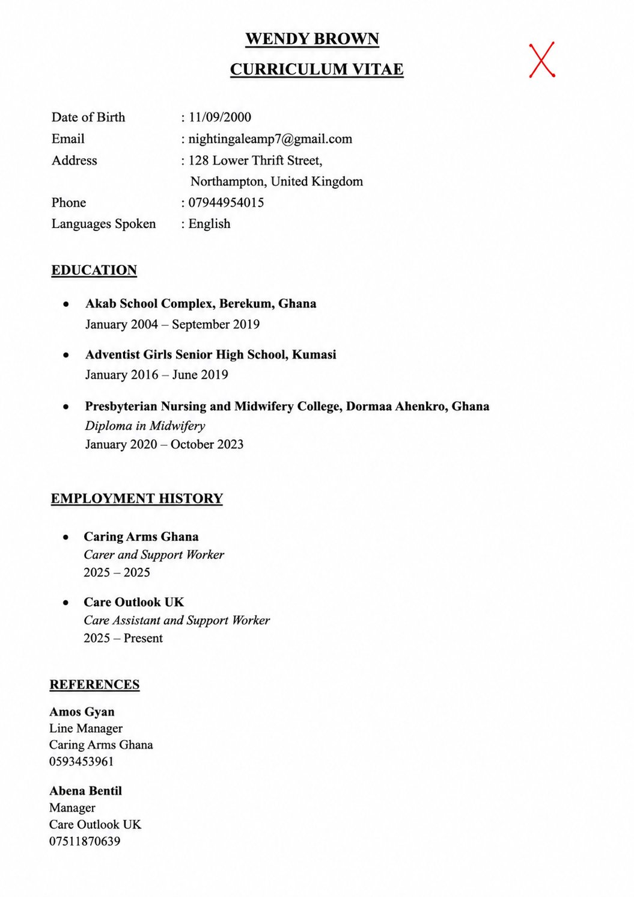
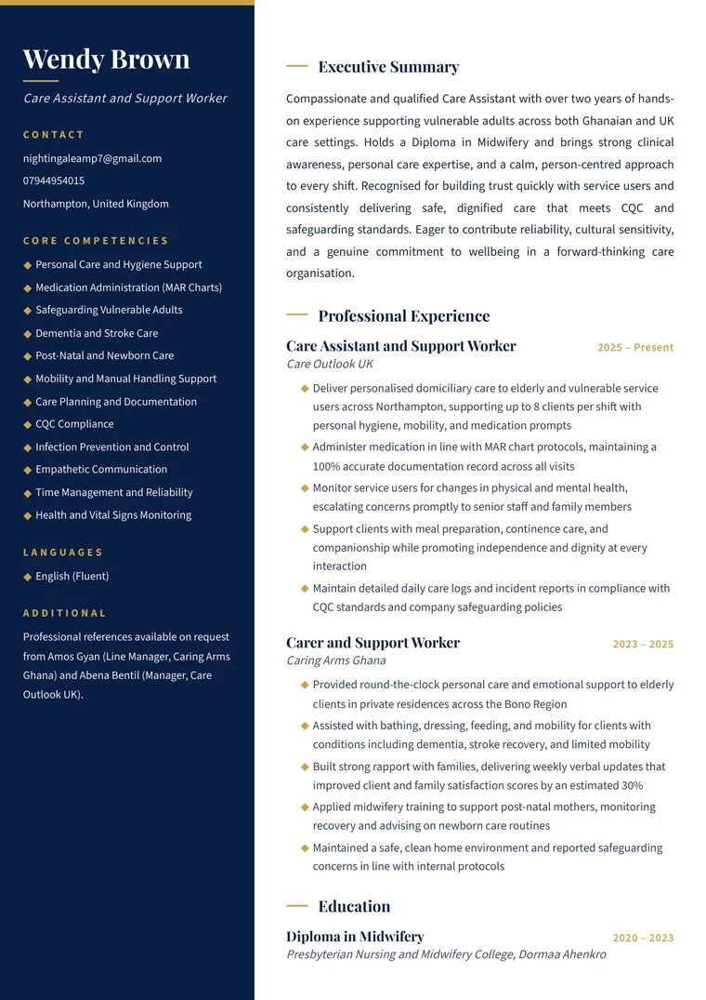
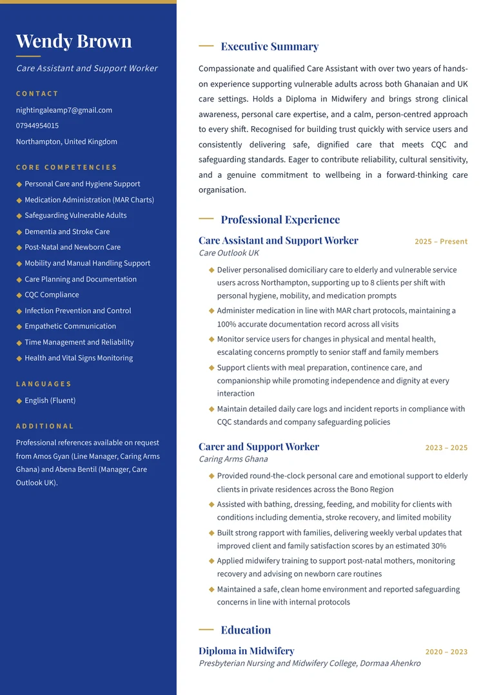
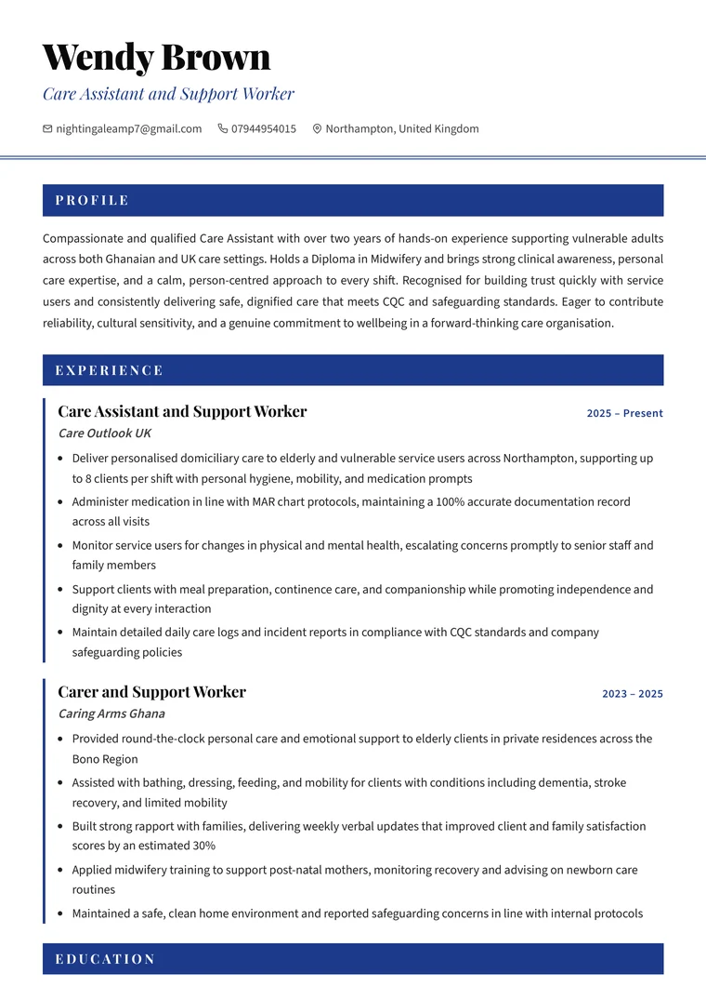
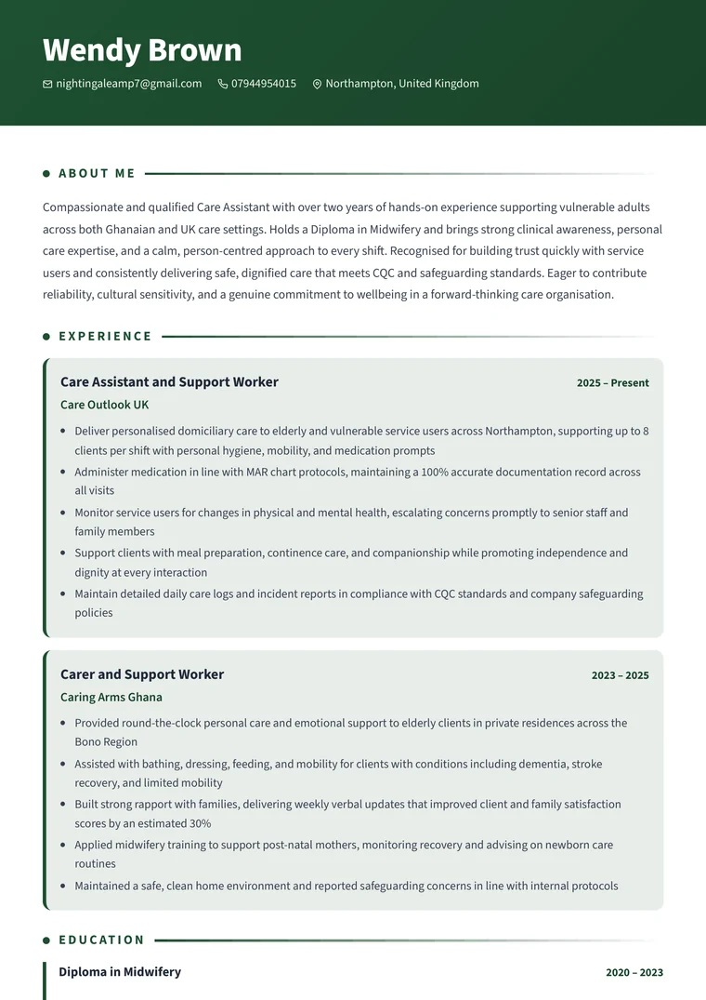
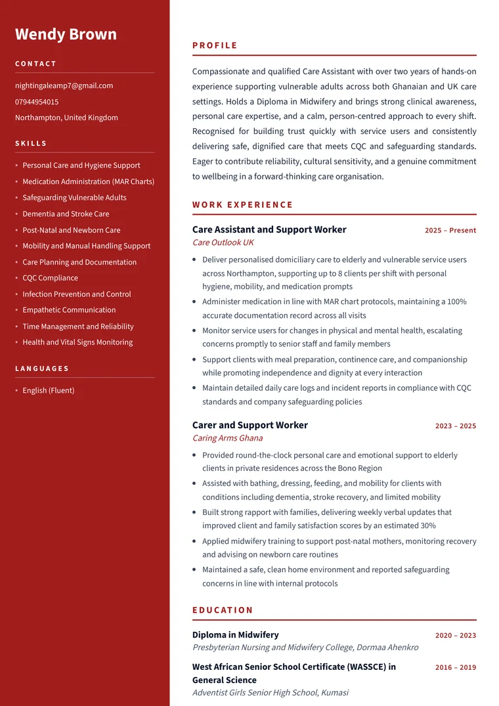
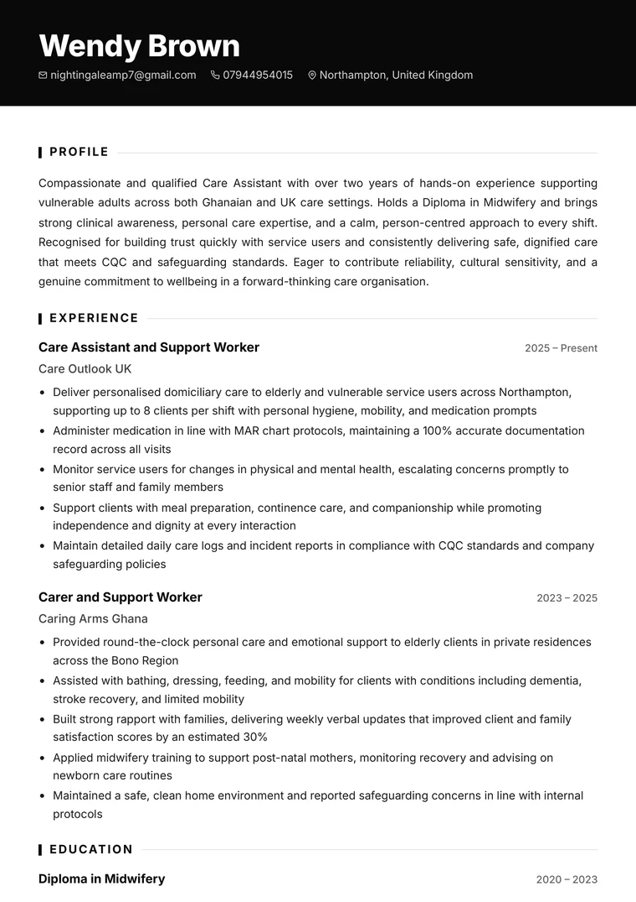
ATS-safe and premium designs — built to look sharp on screen and clean on download.
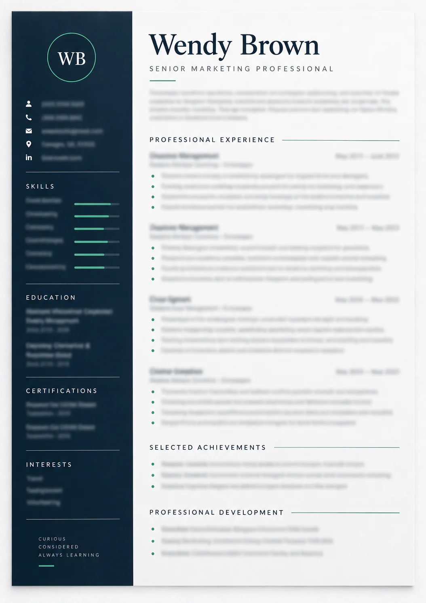
A polished, ATS-ready CV — tailored to a specific role when you add the job advert.
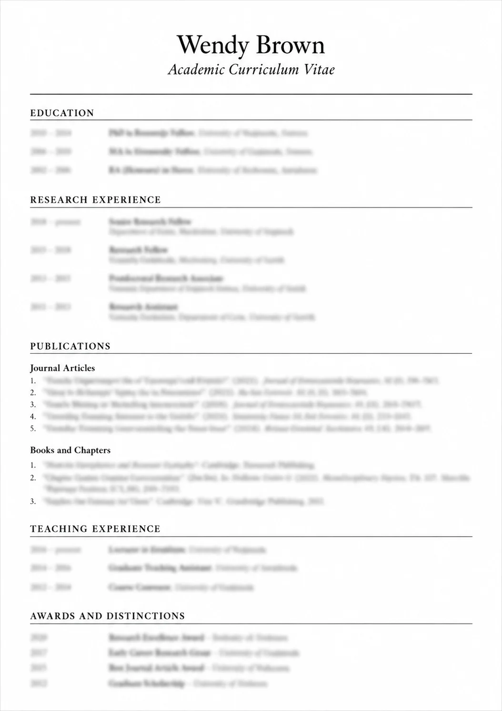
For researchers, lecturers and postgraduate applicants — tailored to the programme or post you’re applying to.
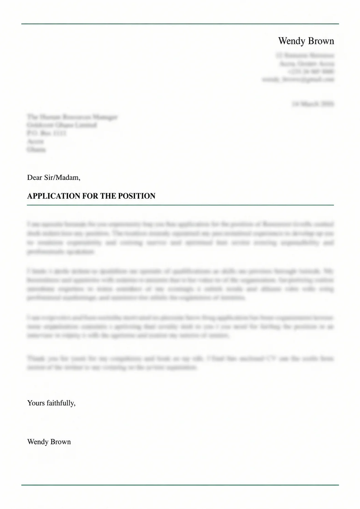
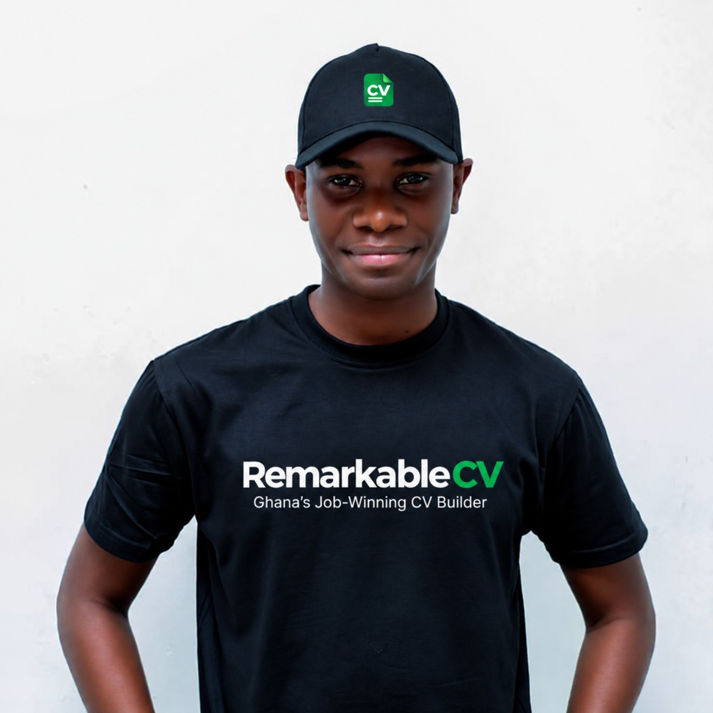
I built Remarkable CV because I kept seeing talented Ghanaians get overlooked — not because they lacked experience, but because their CVs did not communicate their value clearly.
Every job deserves a CV written specifically for it. That is what Remarkable CV builds.
First 2 previews are free
Generate your full CV at no cost. Pay only when you're ready to download — no subscriptions, no hidden fees.
Professional, ATS-optimised CV.
For applying to several roles — 3 tailored CVs plus a cover letter.
For a complete job search — 6 tailored CVs + 2 cover letters.
A compelling cover letter, tailored to the role.
Not a generic CV. Your CV is written specifically for the role you're applying for.
Clean structure, relevant keywords, and recruiter-friendly formatting.
Your experience stays yours — no invented jobs, qualifications, or achievements.
Real feedback from people who used Remarkable CV.
"I just typed my basic details — my name, where I worked, my school — and Remarkable CV turned it into something I was actually proud to send. Got a callback from Goldcoast Financial Group within four days. I was shocked."
"My sister showed me this website. I had an old CV I made in 2021 — very basic, no profile, no formatting. I uploaded it and the CV it gave me was like a whole different document. I got the interview."
"I have been applying for months with no response. A colleague told me my CV was the problem. I used Remarkable CV and within two weeks I had three interview invitations. I wish I had found this earlier."
"As a fresh graduate I didn't know how to write a CV. I typed everything I had and it came back looking like something a professional wrote. Volta Capital Bank called me the following week."
"I used it to apply for a nursing position in the UK. The CV was properly structured and looked very professional — exactly what UK employers expect. It was ready in less than a minute. I didn't believe it until I saw it."
"I am in sales and I needed a CV fast for an urgent application. Remarkable CV did in one minute what would have taken me a whole day. The cover letter option is also very good — it matched exactly what the company was looking for."
"I helped my younger brother with his CV using Remarkable CV. His old CV was terrible — I am not going to lie. It turned it around completely. He is now working at Accra Premier Finance. The 35 cedis was nothing compared to what it did."
"I was nervous about using AI for something as important as my CV. But the result was genuinely good — well structured, professional language, and it highlighted my experience properly. I got shortlisted for a managerial role at PanAfrica Retail Ghana. Very happy."
"I needed an academic CV for a Teaching Assistant position in Political Science. Remarkable CV structured it exactly right — research background, teaching experience, relevant coursework. It felt like it understood what academic employers actually look for."
"I was nervous about using AI for something as important as my CV. But the result was genuinely good — well structured, professional language, and it highlighted my experience properly. I got shortlisted for a managerial role at PanAfrica Retail Ghana. Very happy."
"I have been applying for months with no response. A colleague told me my CV was the problem. I used Remarkable CV and within two weeks I had three interview invitations. I wish I had found this earlier."
"I used it to apply for a nursing position in the UK. The CV was properly structured and looked very professional — exactly what UK employers expect. It was ready in less than a minute. I didn't believe it until I saw it."
"My sister showed me this website. I had an old CV I made in 2021 — very basic, no profile, no formatting. I uploaded it and the CV it gave me was like a whole different document. I got the interview."
"I am in sales and I needed a CV fast for an urgent application. Remarkable CV did in one minute what would have taken me a whole day. The cover letter option is also very good."
"I just typed my basic details and Remarkable CV turned it into something I was actually proud to send. Got a callback from Goldcoast Financial Group within four days. I was shocked."
"I needed an academic CV for a Teaching Assistant position in Political Science. Remarkable CV structured it exactly right. It felt like it understood what academic employers actually look for. Highly recommended."
"I helped my younger brother with his CV using Remarkable CV. His old CV was terrible. It turned it around completely. He is now working at Accra Premier Finance. The 35 cedis was nothing compared to what it did."
"As a fresh graduate I didn't know how to write a CV. I typed everything I had and it came back looking like something a professional wrote. Volta Capital Bank called me the following week."
Everything you need to know before you build your CV.
Generate your full CV for free — no payment needed to see it. You only pay if you decide to download it as a PDF or Word file.
No signup or password needed. Use your email for your receipt and future access to your CVs. When you return, we'll email you a secure access link.
Yes. Upload your current CV and Remarkable CV can use it as a starting point — rewriting, restructuring, and improving it professionally.
Yes. Paste the job description and Remarkable CV tailors your CV to match exactly what that employer is asking for.
Yes. Your completed CV can be downloaded in both PDF and editable Word formats — PDF for applications, Word if you want to make further edits.
No. Credits never expire — buy once, and use them whenever you're ready.
Yes. Your information is processed securely and is never shared with third parties.
Yes. Our CVs are designed using internationally accepted standards and can be used for both local and international applications.
Paste your details. We write it. See it free — pay only to download.
Build my CV now2 free previews · From GH₵39 · No subscription · Pay with Mobile Money